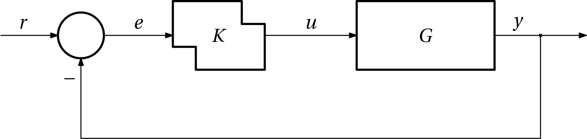

We have introduced two major modeling frameworks for hybrid systems – hybrid automata and hybrid equations. Now we are ready to model any hybrid system. It turns out useful, however, to define a few special classes of hybrid systems. Their special features are reflected in the structure of their models (hybrid automata or hybrid equations). The special classes of hybrid systems that we are going to discuss are
reset systems,
switched systems,
piecewise affine (PWA) systems.
Reset systems
They are also called impulsive systems (the reason is going to be clear soon). They are conveniently defined within the hybrid automata framework. In a hybrid automaton modelling a reset system we can only identify a single discrete state (mode), not more. In the digraph representation, we can only observe a single node.
Figure 1: Reset system
Within the hybrid equations framework, in a reset system some variables reset (jump) and flow, others only flow, but there are no variables that only reset… Well, this definition is not perfect, because as we have discussed earlier, even when staying constant between two jumps, the state variable is, technically speaking, also flowing. What we want to express is that there are not discrete variables in such model, but the hybrid equations framework intentionally does not distinguish between continuous and discrete variables.
We can recognize the bouncing ball as a prominent example of a reset system. Another example follows.
Example 1 (Reset oscillator) We consider a hybrid system state-space modelled by the following hybrid equations:
\begin{aligned}
\begin{bmatrix}
\dot x_1\\ \dot x_2
\end{bmatrix}
&=
\begin{bmatrix}
0 & 1\\ -1 & 2\delta
\end{bmatrix}
\begin{bmatrix}
x_1\\x_2
\end{bmatrix}
+
\begin{bmatrix}
0\\1
\end{bmatrix},
\quad \bm x \in \mathcal C,\\
x_1^+ &= -x_1, \quad \bm x \in \mathcal D,
\end{aligned}
where
\begin{aligned}
\mathcal D &= \{\bm x \in \mathbb R^2 \mid x_1<0, x_2=0\},\\
\mathcal C &= \mathbb R^2\setminus\mathcal D.
\end{aligned}
Simulation outcomes for some concrete value of the small positive parameter \delta are shown in the following figure.
Isn’t it fascinating that a linear system augmented with resetting can exhibit such a complex behavior?
Clegg’s integrator (CI)
Clegg’s integrator is a reset element that can be used in control systems.
Its function is as follows. As soon as the sign of the input changes, the integrator resets to zero. As a consequence, the integrator keeps the sign of its input and output identical.
Unlike the traditional (linear) integrator, the CI exhibits much smaller phase lag (some 38 vs 90 deg).
Example 2 (Response of Clegg’s integrator to a sinusoidal input) Here is a response of the Clegg’s integrator to a sinusoidal input.
Show the code
usingOrdinaryDiffEqf(x, u, t) =u(t) # We adhere to the control systems notation that x is the state variable and u is the input.x0 =0.0# The initial state.tspan = (0.0, 10) # The time span.u = t ->1.0*sin(t) # The (control) input.cond_fcn(x, t, integrator) = integrator.p(t) # The condition function. If zero, the event is triggered.affect!(integrator) = integrator.u =0.0# Beware that internally, u is the state variable. Here, the state variable is reset to zero.cb =ContinuousCallback(cond_fcn, affect!)prob =ODEProblem(f, x0, tspan, u)sol =solve(prob, Tsit5(),callback=cb, reltol =1e-6, abstol =1e-6, saveat =0.1)usingPlotst = sol.tplot(sol.t,u.(t),label="u",lw=2)plot!(sol,lw=2,label="x", tickfontsize=12, xtickfontsize=12, ytickfontsize=12)xlabel!("t")
It may be of historical curiosity that originally the concept was presented in the form of an analog circuit (opamps, diodes, resistors, capacitors). See the references if you are interested.
First-order reset element (FORE)
Another simple reset element that can be used in control systems is known as FORE (first-order reset element) described by
\begin{array}{lr}
\dot u = a u + k e, & \mathrm{when}\; e\neq 0,\\
u^+ = 0, & \mathrm{when}\; e = 0.
\end{array}
Example 3 (FORE) Consider a plant modelled by G(s) = \frac{s+1}{s(s+0.2)} and a first-order controller C=\frac{1}{s+1} in the feedback loop as in Fig 2.
Figure 2: First-order controller in a feedback loop
The response of the closed-loop system to a step reference input is shown using the following code.
Show the code
usingModelingToolkit, Plots, OrdinaryDiffEqusingModelingToolkit: t_nounits as tusingModelingToolkit: D_nounits as Dfunctionplant(; name)@variablesx₁(t)=0x₂(t) =0u(t) y(t) eqs = [D(x₁) ~ x₂D(x₂) ~-0.2x₂ + u y ~ x₁ + x₂]ODESystem(eqs, t; name = name)endfunctioncontroller(; name) @variablesx(t)=0u(t) y(t) eqs = [D(x) ~-x + u y ~ x]ODESystem(eqs, t, name = name)end@named C =controller()@named P =plant()t_of_step =1.0r(t) = t >= t_of_step ? 1.0:0.0@register_symbolicr(t)connections = [C.u ~r(t) - P.y C.y ~ P.u]@named T =ODESystem(connections, t, systems = [C, P])T =structural_simplify(T)equations(T)observed(T)usingDifferentialEquations: solveprob =ODEProblem(complete(T), [], (0.0, 30.0), [])sol =solve(prob, Tsit5(), saveat =0.1)usingPlotsplot(sol.t, sol[P.y], label ="", xlabel ="t", ylabel ="y", lw =2)
Now we turn the first-order controller into a FORE controller by augumenting it with the above described resetting functionality. The feedback loop is in Fig 3.

Figure 3: First-order reset element (FORE) in a feedback loop
The response of the closed-loop system to a step reference input is shown using the following code.
Show the code
usingModelingToolkit, Plots, OrdinaryDiffEqusingModelingToolkit: t_nounits as tusingModelingToolkit: D_nounits as Dfunctionplant(; name)@variablesx₁(t)=0x₂(t) =0u(t) y(t) eqs = [D(x₁) ~ x₂D(x₂) ~-0.2x₂ + u y ~ x₁ + x₂]ODESystem(eqs, t; name = name)endfunctioncontroller(; name) @variablesx(t)=0u(t) y(t) eqs = [D(x) ~-x + u y ~ x]ODESystem(eqs, t, name = name)end@named C =controller()@named P =plant()t_of_step =1.0r(t) = t >= t_of_step ? 1.0:0.0@register_symbolicr(t)connections = [C.u ~r(t) - P.y C.y ~ P.u]zero_crossed = [C.u ~0]reset = [C.x ~0] @named T =ODESystem(connections, t, systems = [C, P], continuous_events = zero_crossed => reset)T =structural_simplify(T)equations(T)observed(T)usingDifferentialEquations: solveprob =ODEProblem(complete(T), [], (0.0, 30.0), [])sol =solve(prob, Tsit5(), saveat =0.1)usingPlotsplot(sol.t, sol[P.y], label ="", xlabel ="t", ylabel ="y", lw =2)
Obviously the introduction of the resetting functionality into the first order controller had a positive effect on the transient response of the closed-loop system.
When (not) to use reset control?
However conceptually simple, reset control is not a panacea. Analysis and design of reset control systems is not straightforward compared to the traditional linear control systems. In particular, guaranteeing closed-loop stability upon introduction of resetting into a linear controller is not easy and may require advanced concepts (some of them we are going to introduce later in the course). Therefore we should use reset control with care. We should always do our best to find (another) linear controller that has a performance comparable or even better than reset control system.
But reset control can be helfpul if the plant is subject to fundamental limitations of achievable control performance such as
integrators and unstable poles,
zeros in the right half-plane (non-minimum phase),
delays,
…
In these situations reset control can be a way to beat the so-called waterbed effect.